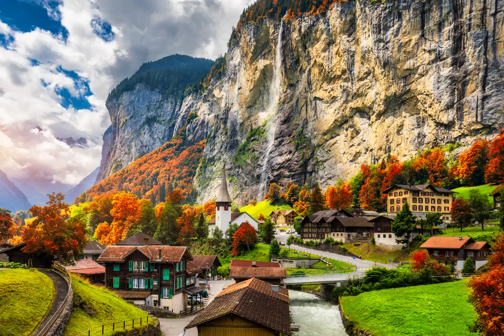

No es solo el centro político nacional, es un tesoro histórico reconocido como Patrimonio de la Humanidad por la UNESCO, considerada como el corazón de Suiza por un equilibrio entre su arquitectura, poder politico, industria de precisión y calidad de vida
Su población total abarca aproximadamente 9 millones de habitantes, el 26% equivale a residentes extrajeros que no tienen pasaporte suizo. Las principales nacionalidades extranjeras en Suiza son: Italianos, alemanes, portugueses y franceses.
Debido a la diversa cantidad de población extranjera, los idiomas que podemos ver en Suiza son: italiano, portugues, francés, alemán, retrorromántico y otros
Zúrich (Zürich): Capital financiera, sede de bancos globales (como UBS) y de la bolsa de valores suiza.
Basilea (Basel): El corazón de la industria química y farmacéutica mundial
Berna (Bern): La capital administrativa.
Ginebra (Genève): El centro de la diplomacia y el comercio de materias primas.
Sector Terciario (Servicios) ~ 74% del PIB ➡️ Banca y seguros, comercio de materias primas, turismo.
Sector Secundario (Industria) ~ 25% del PIB ➡️ Farmacéutica, química, relojería, maquinaria y electrónica
Sector Primario (Agricultura) - 1% del PIB ➡️ Productos lácteos (aunque pequeño, vital para la identidad nacional y seguridad alimentaria).

| Ciudades | Lugares | ||
|---|---|---|---|
| Zurich | Casco Antiguo de Zurich - Iglesia Grossmunster - Lago de Zurich | ||
| Lucerna | Puente de la capilla - Monte Pilatus - León de Lucernas | ||
| Interlaken | Jungfraujoch - Harder Kulm - Lago Thun y Brienz | ||
| Ginebra | Jet d' Eau - Palacio de las Naciones - Lago Lemán | ||
| Berna | Centro Histórico de Berna - Parque de los Osos | ||
| Zermatt | Matterhorn- Estación de esquí - Tren panorámico | ||
| Lausana | Museo Olímpico - Catedral de Lausana | ||
| País | Poblacion | Área | PIB | Idioma principal | Moneda |
|---|---|---|---|---|---|
| 🇨🇭 Suiza | ~ 8.8 millones | 41.000 km² | Alto | Alemán, francés, italiano | Franco suizo |
| 🇨🇴 Colombia | ~ 52 millones | 1.142.000 km² | Medio | Español | Peso colombiano |
| 🇩🇪 Alemania | ~ 84 millones | 357.000 km² | Muy alto | Alemán | Euro |
| 🇫🇷 Francia | ~ 65 millones | 551.000 km² | Muy alto | Francés | Euro |
| 🇳🇴 Noruega | ~ 5.5 millones | 385.000 km² | Muy alto | Noruego | Corona noruega |